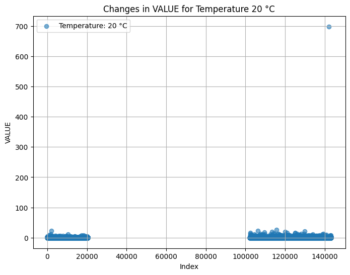
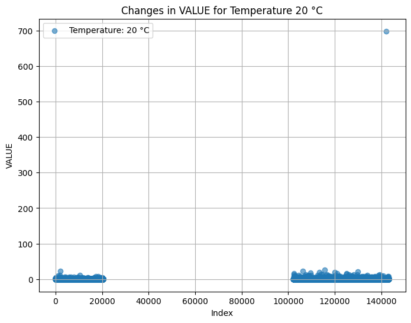
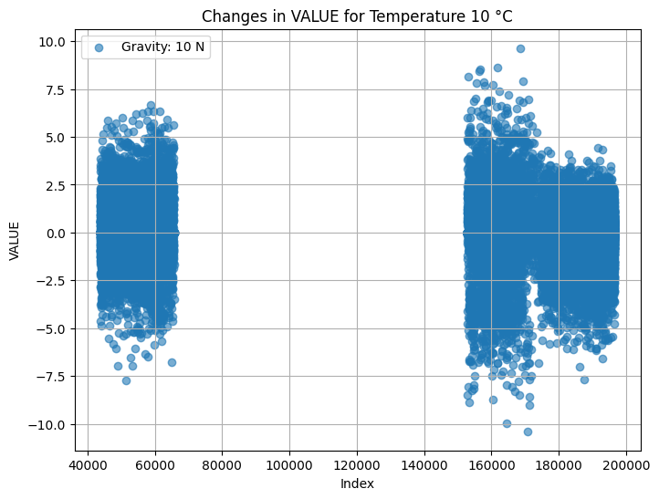
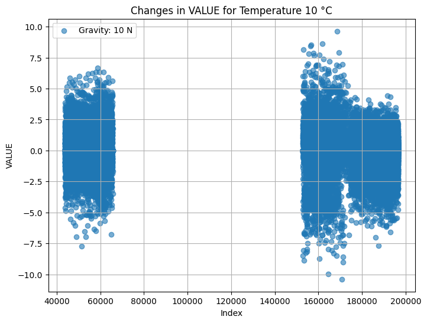

Impact of Space Factors on Worms
Temperature
Temperature plays a crucial role in the physiology of worms. Fluctuations in temperature can affect their metabolism, mobility, and lifespan. In space, extreme temperature variations can lead to challenges in maintaining optimal conditions for worm health. Temperature also affects the activity of genes, the following plots show the analysis of the used dataset, that shows the changes in value of different gene sequences under different temperature degrees.
 


Microgravity and Altered Gravity
Microgravity, a defining feature of space, can have profound effects on worms' neurobiology and musculoskeletal systems. Worms adapt to altered gravitational conditions by modifying their locomotion and muscle function, offering valuable insights into the effects of space travel.
 


Radiation
Space is filled with various types of radiation that can impact DNA and cellular structures. The study of how radiation affects worms is critical for understanding genetic mutations and potential countermeasures for space radiation exposure.
General Space Conditions
Beyond these specific factors, the unique environment of space introduces additional challenges. Microgravity can impact bone density, muscle mass, and cardiovascular function. Worms serve as a valuable model organism for studying the broader effects of space travel on living organisms.